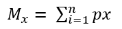
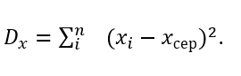

Аналіз вибірки
Схема аналізу:
- Розрахунок математичних очікувань та дисперсій для кожної змінної з вибірки;
- Математичне очікування випадкової величини х позначається 𝑀x і розраховується за формулою

де p - величина, яка характеризує вірогідність отримати деяке значення випадкової величини;
- Дисперсія(𝐷x) – сума значень квадратів відхилень випадкової величини від середнього значення випадкової величини розраховується за формулою
